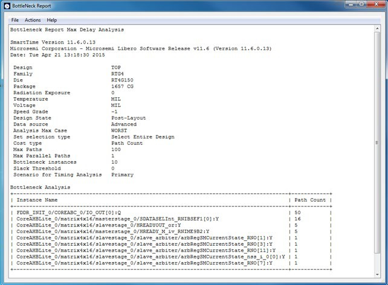
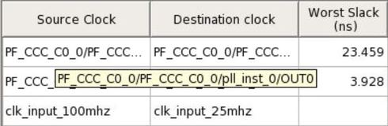
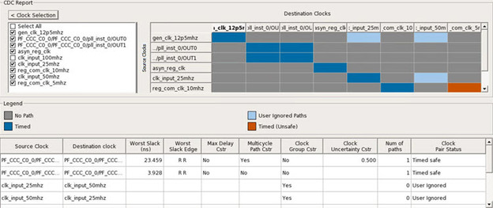
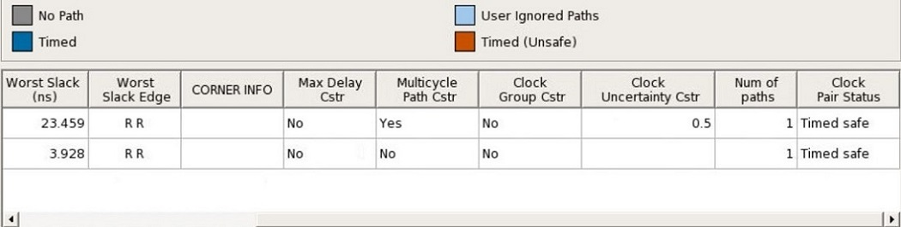
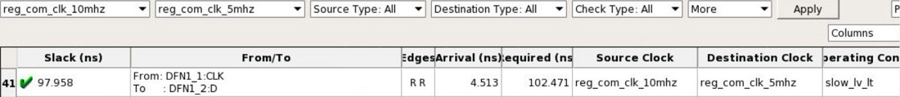
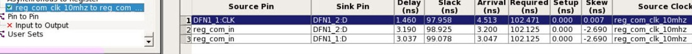

The following table lists the sections in the Timing Report.
Table 11-4 11-5 11-6. Timing Report Sections
Section
Description
Header
Lists the:
Report
type
Version of
Designer used to generate the report
Date and time
the report was generated
General
design information (name, family, and so on)
Summary
Reports the timing information for each clock domain. By default,
the clock domains reported are the explicit clock domains that are
shown in SmartTime. To filter the domains and show only specific
sections in the report, use the Timing Report Options dialog box.
Path
Lists the timing information for different types of paths in the
design. This section is reported by default. You can deselect this
option in the Timing Report Options dialog box.
By default, the
number of paths displayed per set is 5. You can filter the
domains using the Timing Report Options dialog box. You can also
view the stored filter sets in the generated report using the
Timing Report options. The filter sets are listed by name in
their appropriate section. The number of paths reported for the
filter set is the same as for the main sets. By default, the
filter sets are not reported.
This set reports the paths from the registers clock pins of the specified clock domain to the registers data pins in the current clock domain. Inter-domain paths are not reported by default.
This set lists input to output paths and user sets. Input-to-output paths are reported by
default. To see the user- defined sets, use the Timing Report Options dialog box.
Expanded paths can be reported for each set. By default, the number of expanded paths to report
is set to 1. You can select and change the number when you specify Timing Report options.
General design
information (name, family, and so on)
Paths
This section lists the timing information for different types of
paths in the design. The number of paths displayed is controlled by the
following parameters:
A maximum slack
threshold to report
A maximum number
or path to report
By default, the slack threshold is 0 and the number of paths is
limited. The default maximum number of paths reported is 100.All
clocks domains are mixed in this report. The paths are listed by
decreasing slack.
You can also choose to expand one or more
paths. By default, no paths are expanded. For details, see the
Timing Violation Report options.
The Constraints Coverage Report shows the overall coverage of the timing constraints set
on the current design. You can generate this report either from within Designer or
within SmartTime Analyzer.
Figure 11-23. Sample Constraints Coverage Report
The following table lists the sections in the Constraints Coverage Report.
Shows statistical information about the timing constraint in the
design. For each type of timing checks (Setup, Recovery, Output, Hold,
and Removal), it specifies how many are Met (there is a constraint and
it is satisfied), Violated (there is a constraint and it is not
satisfied), or Untested (no constraint was found).
Results by Clock Domain
This section provides a coverage summary for each clock
domain.
Enhancement Suggestions
Reports, per clock domain, a list of constraints that can be added to
the design to improve the coverage. It also reports if some options
impacting the coverage can be changed.
Detailed Stats
Provides detailed suggestions about specific clocks or I/O ports that
may require to be constrained for every pin/port that requires
checks.
A bottleneck is a point in the design that contributes to multiple timing violations. The
Bottleneck Report lists the bottlenecks in the design. You can generate this report
from SmartTime Analyzer.
Note: The bottleneck can be computed only when a cost type is
defined. There are two cost type options available:
Path count: associates
the severity of the bottleneck to the count of violating/critical paths that
traverse the instance.
Path cost: associates
the severity of the bottleneck to the sum of the timing violations for the
violating/critical paths that traverse the instance.
Figure 11-24. Sample Bottleneck Report

The following table lists the sections in the Bottleneck Report.
Table 11-7. Bottleneck Report
Sections
Part
Description
Device Description
Contains general information about the design, including:
Design
name
Family
Die
Package
Software
version
Bottleneck Analysis
Lists the core of the bottleneck information. It is organized
into two columns:
Instance
Name: refers to the output pin name of the instance.
Path Count:
shows the number of violating paths that include the
instance pin.
The Datasheet Report displays the external characteristics of the design. You can
generate this report from SmartTime Max/Min Delay Analysis View.
Figure 11-25. Sample Datasheet Report
The following table lists the tables in the Datasheet Report.
Table 11-8. Datasheet Report Tables
Table
Description
Pin Description
Provides the port name in the netlist, location on the package, type
of port, and I/O technology assigned to it. Types can be input, output,
or clock. Clock ports are ports shown as "clock" in the Clock domain
browser.
DC Electrical Characteristics
Provides the parameters of the different I/O technologies used in the
design. The number of parameters displayed depends on the family for
which you have created the design.
AC Electrical Characteristics
Provides the timing properties of the ports of the design. For each
clock, this section includes the maximum frequency. For each input, it
includes the external setup, external hold, external recovery, and
external removal for every clock where it applies. For each output, it
includes the clock-to-out propagation time. This section also displays
the input-to-output propagation time for combinational paths.
The Combinational Loop Report shows all loops found during initialization and reports
pins associated with the loop(s) and the location where a loop is broken.
To generate a Combinational Loop
Report:
From the Tools menu, choose Reports >
Combinational Loops.
The Combinational_Loops Report Options dialog box appears.
Select either Plain Text or Comma Separated
Values.
The Combinational Loop Report shows all loops found during initialization, reports the pins
associated with the loops, and identifies the locations where loops are broken.
Figure 11-26. Sample Combinational Loop Report
11.8.14 Generating a Clock Domain Crossing (CDC) Report
The Clock Domain Crossing (CDC) Report analyzes timing paths that cross from one clock
domain (the source clock) to another clock domain (the destination clock). The CDC Report helps
identify instances where there may be data loss or metastability issues.
To generate the CDC Report:
From the Tools menu, choose Reports >
Clock Domain Crossing (CDC)..
The Clock Domain Crossing Report Options dialog box
appears.
Select either CDC Table or Comma Separated Values.
Click OK.
Selecting CDC Table displays a graphical table with color-coded cells.
Each cell represents a CDC type between the source
clock and the destination clock domains that have
constraints. Clocks without constraints do not
appear in the CDC table.
The attributes present in the path table are as follows:
Source Clock: source of the clock
Destination Clock: destination of the clock
Worst Slack (ns): worst slack of the CDC path in nanoseconds
Worst Slack Edge: source/sink edge for the worst path of CDC
Max Delay Cstr: see the following table.
Value
Description
Yes
All paths in CDC have set_max_delay applied
No
No paths in CDC have the constraints
applied
Partial
Any path in CDC has the constraint applied
Multicycle Path Cstr: see the following table.
Value
Description
Yes
All paths in CDC have set_multicycle_path
applied
No
No paths in CDC have the constraints
applied
Partial
Any path in CDC has the constraint applied
Clock Group Cstr: see the following table.
Value
Description
Yes
CDC has set_clock_group applied
No
CDC does not have set_clock_group applied
Clock Uncertainty Cstr: uncertainty value for the worst path in CDC; otherwise, the clock
uncertainty field is left empty.
Num of Paths: number of paths in CDC. For User Ignored paths, the value is 0.
Clock Pair Status: status can be Timed Safe, Timed Unsafe or User Ignored.
In the CDC Report dialog box, you can select the clocks to view or hide. Clicking the
Clock Selection button at
the top left of the dialog box lists all clocks that
can be viewed or hidden. By default, all clocks are
checked and visible. To hide a clock, clear its
check box.
Figure 11-27. Showing or Hiding Clocks
The following table describes the colors in the CDC Report shown in the preceding figure.
Pattern
Status
Color
Paths from the source clock domain to the destination clock domain have all been disabled by false path or clock group constraints.
User-Ignored Paths
Light blue
No Paths found from the source clock domain to the destination clock domain.
No Paths
Gray
The source and destination clocks are synchronous: Both the clocks have a common primary
clock and paths are found from the source clock
domain to the destination clock domain.
Timed
Dark Blue
The source and destination clocks are asynchronous: Both the clocks have NO common primary
clock, while paths are found from the source clock
domain to the destination clock domain. Currently,
synchronizers, if present, are not accounted for
in this report.
Timed (unsafe)
Brown
There are certain scenarios related to the path table as explained in the following:
When CDC Report is generated, path table is shown by default for all CDC having paths. Each row
shows the worst slack for a clock crossing. Similarly, when clicking on a particular
CDC crossing in CDC Report, you can have a single row showing the worst slack for
CDC crossing.
Example: The path table shown in the following figure, the worst path for reg_com_clk_10mhz to
reg_com_clk_5mhz has the worst slack of 93.541.
The same path is displayed by default, when the
CDC crossing is selected.
Figure 11-28. Worst Path with Slack 93.541 nsFigure 11-29. Smarttime Showing the Worst Path with Slack
93.541 ns
Clicking on the CDC box shows the worst slack for a clock crossing as in path table in the
following figure.
Figure 11-30. Highlighted CDC Box Showing the Worst Slack in
Path Table
Clicking on the same CDC box again shows details for all the clocks selected in the CDC
Report.
Figure 11-31. CDC Path Table Showing All Clocks on
Deselecting the Selected CDC Box
For all clocks having large names, tool-tips for columns have been added.
Figure 11-32. CDC Path Table Showing Tool-Tip for a Source
Clock Name
Selecting/deselecting clocks in clock selection dynamically changes the path table along with the
CDC table. Both the tables are in sync. Example: Here, clk_input_100mhz is selected,
therefore, the clock is displayed in CDC table and path table.
Figure 11-33. CDC Table in Sync with Clock Selection
Section
When the clock clk_input_100mhz is unselected, then the same clock is removed from the CDC table.
The crossings related to the clock are also
removed from the path table as shown in the
following figure.
Figure 11-34. Deselecting a Clock in Clock Selection Section
Syncs the Path Table Accordingly
After clicking any one of the four options in the CDC category, the clock table is filtered
according to the CDC category selected.
In the following scenario, the Timed button has been selected and Timed safe CDC is displayed
only in the clock table.
Figure 11-35. CDC Report When Timed Button is
Selected in CDC Category

Clicking on the same CDC category shows the details for all the clocks selected in
CDC Report. Selecting/unselecting clocks in clock selection does dynamically change the
clock table along with the CDC table.
In the following figure, the User Ignored CDC category button is chosen and clk_input_100mhz is
selected. Therefore, the clock is displayed in CDC
table and clock table.
Now, when clock clk_input_100mhz is unselected, the same clock is moved from CDC table and the
crossings related to that clock are also removed
from clock table. Therefore, when the User Ignored
CDC category is selected, entries related to
clk_input_100mhz are not visible.
After right-clicking a CDC box, you can choose to Copy, Add a
Clock Group Constraint or Go to Timing
Explorer.
Figure 11-36. CDC Report with Go to Timing Explorer
Option
Selecting the Go to Timing Explorer option opens the Timing Explorer
dialog box.
Figure 11-37. Timing Report Explorer
There are corner scenarios when cross probing between CDC and Timing Explorer:
Scenario 1:
This is a scenario where difference is seen between SmartTime and Verify timing, when two clocks
are defined on same port and when cross probing for
CDC reg_com_clk_10mhz and reg_com_clk_5mhz is unable
to find the same in Timing Report Explorer.
The Timing Report Explorer does not pick reg_com_clk_5mhz as destination clock, and Smart time
does pick the reg_com_clk_10mhz and reg_com_clk_5mhz pair as CDC, as shown in the
following figure.
Figure 11-38. Timing Report Explorer Snapshot - 1Figure 11-39. Timing Report Explorer Snapshot - 2Figure 11-40. SmartTime SnapshotTiming Explorer is picking the worst slack
path for a pair of start and end point. Therefore,
you can miss CDC and other reg to reg paths with
lower slack values.
Scenario 2:
This is a scenario where due to different operating conditions set in Smart Time, you can have
different results, when cross probing between CDC
and Timing Report Explorer. SmartTime and CDC are in
sync.
Figure 11-41. Worst Slack of 97.958 ns in Timing Report
Explorer

Figure 11-42. Worst Slack of 98.154 ns in SmartTimeFigure 11-43. Operating ConditionsThe Timing Report Explorer reports the path
from slow_lv_lt, and SmartTime reports using the
operating condition fast_hv_lt. When the operating
condition in SmartTime is changed to slow_lv_lt, the
worst slack becomes the same as in the Timing Report
Explorer.
Figure 11-44. Slack After Changing the Operating Condition
to slow_lv_lt
CDC Reports worst path for a particular corner selected in SmartTime, and Timing Report Explorer
reports the worst path across all the corners.
In such cases, you can see changes in values when navigating from CDC to Timing Report Explorer.
To make you aware of such situations, Corner Info
column is added to display the operating
conditions.
Note:
The path details for the same clock crossing (C1 to C1) are not shown in the path tale as they
are not valid clock crossings and are currently shown as timed safe by default
in CDC Report.
The clock table has CDC details only related to clocks checked in clock selection from CDC
Report.
Path table will not show any CDC having no paths.
For User Ignored CDC columns, “Worst Slack (ns)”, “Worst Slack Edge”, “Max Delay Cstr”,
“Multicycle Path Cstr”, and “Clock Uncertainty
Cstr” are empty.
Cross probing is allowed to Timing Report
Explorer for the same clock crossing (C1 to
C1).
For User Ignored CDC category, Corner Info
column is empty.
Selecting Comma Separated Value exports the CDC Report to a CSV file. If you select this option, a window appears in which you assign a name to the CSV file and specify the location where it will be exported. The CSV file shows details about the CDC between each clock domain in numeric format. Each CDC type is represented as a number similar to colors in the table. The CSV file includes an explanation of each number type and CDC type.